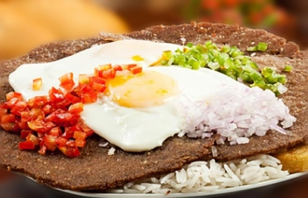

Gastronomia Cochala
La gastronomia cochala representa la riqueza cultural y la variedad de sabores de Cochabamba. Entre sus preparaciones mas iconicas se encuentran el silpancho, elaborado con carne apanada, arroz, papa, huevo y ensalada, y el pique macho, una abundante combinacion de carne, salchicha, papa, cebolla, tomate y locoto.

Pique macho |
 Silpancho |